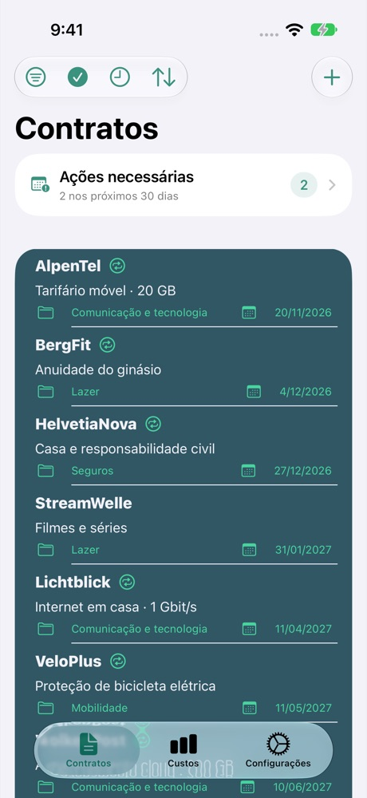
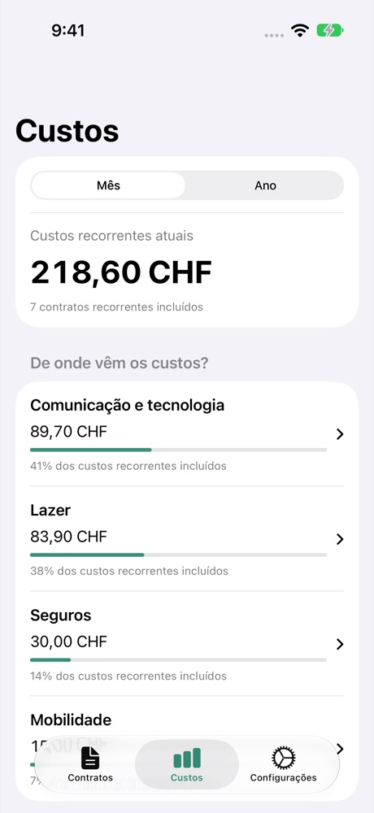

Prazos sob controlo
Acompanhe os prazos de cancelamento e defina avisos. Também pode adicionar datas ao Calendário e aos Lembretes.
PARA O DIA A DIA
Custos, prazos de cancelamento e documentos: o Contractly organiza os seus contratos. Diretamente no seu iPhone.
Ver na App StoreAté 4 contratos grátis · Contratos ilimitados com Premium

Acompanhe os prazos de cancelamento e defina avisos. Também pode adicionar datas ao Calendário e aos Lembretes.
Compare custos mensais e anuais. Some os valores numa moeda de apresentação comum.
Anexe PDF, fotografias, digitalizações e ligações aos seus contratos. Encontre os documentos onde precisa deles.

CONTRACTLY
Do tarifário móvel ao ginásio: consulte as suas despesas recorrentes. Os valores convertidos são indicativos.
Introduza o fornecedor, a duração e o pré-aviso.
Registe os custos e anexe documentos.
Consulte os prazos e defina lembretes.
Os contratos e documentos ficam guardados no seu dispositivo. Não precisa de uma conta Contractly. Algumas funções utilizam serviços externos.
Tratamento de dados em detalhe →Pode gerir até quatro contratos gratuitamente. O Premium elimina este limite. Consulte o preço e as condições atuais na App Store ou na janela de compra.
Sim. A função de cópia de segurança e restauro permite exportar e restaurar contratos, documentos e definições. As cópias exportadas não são encriptadas: guarde-as num local seguro.